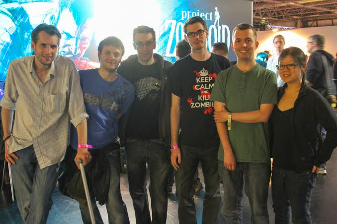

Um surto zumbi fictício em Knox Country, Kentucky, em julho de 1993. Você controla pessoas comuns tentando sobreviver o máximo possível antes de uma morte inevitável.
Fugir pela escada de incêndio: uma das saídas clássicas do jogo.
A lore do jogo
O jogo não tem uma campanha tradicional. A história é revelada aos poucos por transmissões de rádio, canais de TV, jornais e pistas espalhadas pelo mapa. Quem presta atenção descobre o que aconteceu; quem não presta, descobre do jeito difícil.
Sinais iniciais (início de julho de 1993): moradores reclamam de um cheiro estranho e fétido no ar, enquanto as linhas telefônicas são cortadas sob a desculpa de manutenção.
Isolamento militar (6 a 9 de julho): o exército cria uma zona de exclusão cercando o condado e inicia as evacuações. A partida começa em 9 de julho, logo depois que o perímetro sai de controle.
Censura e mutação aérea: governo e mídia tentam esconder a gravidade da crise, mas vazam relatos de pessoas mordidas que se transformam. Por volta da metade do mês, confirma-se que o vírus também se espalha pelo ar, e só uma pequena parcela da população é imune, incluindo o seu personagem.
Colapso global (fim de julho): a quarentena rompe e o vírus chega a outras cidades e países. Rádios e TVs saem do ar uma a uma, a rede elétrica e a água falham, e a civilização entra em colapso total.
Origem indefinida: o jogo evita dar uma resposta definitiva sobre a causa. Restam apenas indícios ambientais, como instalações militares secretas e relatórios contraditórios, para manter o foco na sobrevivência de gente comum.
Cronologia do Evento Knox
As transmissões oficiais cobrem principalmente os primeiros dez dias da partida (9 a 18 de julho). Os fatos anteriores e posteriores são conhecidos por jornais encontrados no mapa e pelos registros da linha do tempo do universo do jogo.
Antes do início
Odor fétido persistente e linhas telefônicas cortadas pela Knox Telecommunications. Em 3 de julho, um caminhão militar com resíduos perigosos sofre um acidente ao norte de March Ridge, e jornais noticiam dezenas de casos de uma "gripe severa" em Muldraugh.
Durante a noite, o Exército dos EUA estabelece a Zona de Exclusão de Knox, evacuando civis e cercando a região com soldados em trajes de proteção biológica.
Licenças em Fort Knox são canceladas e o espaço aéreo é fechado. Governo estadual e Casa Branca negam a epidemia, enquanto a imprensa se aglomera na fronteira de Louisville.
Nas transmissões
O jogo começa. Às 11h, o General John McGrew, comandante da operação, pede calma e fala de uma doença semelhante à gripe, mas diz que não há mortes. À tarde, ouvem-se tiros perto da cerca, e o Presidente declara confiança no CDC e nos militares.
O governo diz que o contágio diminui, mas o ex-diretor do CDC, Dr. Jeff Galbraithe, vai à TV criticar a falta de verbas e a burocracia. Começam protestos em Washington.
A OMS recomenda suspender voos internacionais e as bolsas despencam. Tumultos em Washington, Nova York e Los Angeles levam a toques de recolher, e os militares ampliam a zona de exclusão.
Vaza a primeira fotografia de dentro da zona isolada: um jovem ensanguentado caminhando entre cadáveres. O pânico se espalha pelo país.
Sobreviventes alcançam a cerca ao sul de Louisville e contam a verdade a repórteres, como Jackie Jaye, da rádio LBMW: os mortos estão se levantando e atacando os vivos.
A mídia internacional volta os olhos para Kentucky. Câmeras transmitem ao vivo confrontos armados entre civis desesperados e soldados da Guarda Nacional.
A barreira militar de Louisville é rompida por infectados e refugiados. Confirma-se a mutação para transmissão pelo ar: 95% das pessoas nos acampamentos adoecem sem terem sido mordidas.
Com a quarentena perdida, o exército detona as pontes sobre o rio Ohio para frear o avanço rumo ao norte. Soldados doentes são executados por colegas antes de se transformarem.
Casos são confirmados em Londres, Paris, Tóquio e cidades da África e da América do Norte. O General McGrew deixa uma mensagem gravada em loop pedindo que os imunes peguem em armas e resistam até o resgate.
As grandes redes de TV (como Triple-N e WBLN) e as rádios saem do ar uma a uma, muitas vezes interrompidas por invasões de zumbis nos estúdios. A partir do dia 19, restam sinais automáticos de emergência e radioamadores desesperados.
O colapso final
Países tentam medidas extremas: o Japão destrói o Túnel Seikan e a Holanda inunda Amsterdã. Em 22 de julho, o vírus já está em todas as nações do planeta.
A maior parte da população mundial adoece e os últimos sinais de comunicação global desaparecem em 28 de julho de 1993. Sobram pequenos grupos de imunes à variante aérea, entre eles o seu personagem.
Teorias sobre a origem do vírus
Os criadores nunca confirmaram de onde veio o patógeno. A comunidade monta as suas hipóteses a partir de pistas no mapa, nas rádios e nos jornais. Estas são as principais:
Experimento militar (a mais aceita)
Poluição industrial
Príons na carne do Spiffo's
Origem extraterrestre
Rumores das rádios
Como o jogo foi feito

A equipe de desenvolvimento em um evento. Ao fundo, o painel do jogo.
O desenvolvimento começou com uma equipe minúscula liderada por Chris Simpson e Andy Hodgetts, que queriam criar um simulador de apocalipse zumbi realista, o estúdio independente The Indie Stone.
Inspirados pelo sucesso do financiamento antecipado de Minecraft, os criadores quiseram responder à pergunta "o que eu realmente faria em um apocalipse zumbi?". As referências vieram dos filmes de zumbis lentos de George Romero e dos livros de Max Brooks (Guerra Mundial Z e O Guia de Sobrevivência a Zumbis), rejeitando zumbis corredores e heróis de ação.
Logo após lançar o pré-alfa, inicialmente pelo portal Desura, o PayPal e o Google Checkout congelaram as contas do estúdio, alegando que não podiam receber doações ou pré-vendas de um jogo inacabado. A equipe ficou sem acesso ao dinheiro arrecadado.
Ladrões invadiram o apartamento dos desenvolvedores e levaram dois laptops com meses de código recente, sem backup. O projeto atrasou muito e o caso teve grande repercussão na comunidade independente.
O jogo entra no Acesso Antecipado do Steam e passa a evoluir por grandes atualizações chamadas de builds. Com os anos, o mapa cresceu, chegou o multijogador, os sprites 2D deram lugar a modelos 3D animados, e sistemas como veículos, clima, saúde e artesanato ganharam profundidade.
Build 41: visual e combate
Estável desde o fim de 2021, tornou cada encontro mais tático e perigoso.
Animações e roupas em 3D, que sujam, acumulam sangue e rasgam.
Combate mais punitivo, com física de movimento: virar bruscamente ou tropeçar reduz a velocidade.
Louisville, a metrópole no extremo nordeste do mapa.
Lacerações e temperatura corporal, que exigem roupa certa para o frio e o calor.
Código de rede reescrito para o multijogador.
Build 42: reconstruir a civilização
Chegou à versão estável em julho de 2026 e mira a sobrevivência a longo prazo.
Animais: vacas, porcos, ovelhas, galinhas e cervos para caçar e criar.
Artesanato novo: ferraria, olaria, tecelagem, alvenaria e bebidas.
Porões, bunkers e prédios de até 32 andares.
Mapa maior a oeste e ao sul, com três novas cidades, prisão e complexo madeireiro.
Luz natural realista, saque dinâmico no lugar de Sortudo e Azarado, e armas brancas que perdem o fio.
O jogo em imagens
Horda gigante
Sem armas de fogo e sem heróis: contra uma horda assim, só fugir resolve.
Base improvisada
Uma casa bem abastecida é o que separa a primeira semana da segunda.